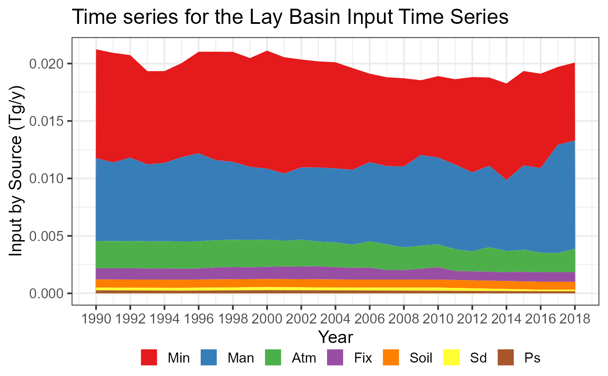
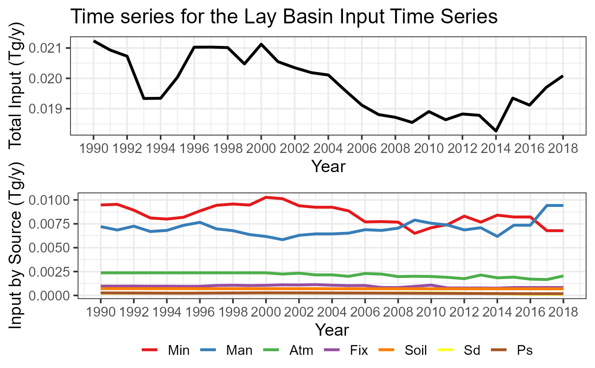

Creates a time series plot showing basin inputs by source
Arguments
- catch_data
data frame. Definition of the topological sequence of catchments.
- annual_data
data frame. Sources of nutrient for each year and catchments.
- sh_file
sf object. The spatial information.
- basin_name
character. The title of the plot
- plot.type
character. Alternative of the plot: “gr1”: stacked area by km2; “gr2” lines & area by km2 and Shreve.
Examples
# \donttest{
# the data of the TN scenario
data(catch_data_TN)
data(annual_data_TN)
data(sh_file)
# The title of the plot
plotTitle <- "Time series for the Lay Basin"
# the time serie plot 1 (by km2)
input_Tserie(catch_data_TN, annual_data_TN, sh_file, plotTitle, "gr1")

#> Year Atm Min Man Fix Soil Sd Ps
#> 1 1990 2368.655 9475.761 7206.448 980.660 710.572 228.832 264.982
#> 2 1991 2368.655 9537.716 6848.931 973.478 710.572 232.359 258.745
#> 3 1992 2368.655 8926.636 7252.064 983.411 710.572 235.871 252.501
#> 4 1993 2368.655 8110.271 6694.876 966.751 710.572 239.395 246.261
#> 5 1994 2368.655 7997.243 6808.781 974.072 710.572 242.921 240.025
#> 6 1995 2368.655 8181.465 7338.956 953.901 710.572 246.442 233.786
#> 7 1996 2368.655 8844.446 7652.924 960.771 707.256 250.014 242.098
#> 8 1997 2368.655 9437.624 6969.992 1041.698 707.256 253.585 250.396
#> 9 1998 2368.655 9571.559 6783.746 1067.070 707.256 257.159 258.713
#> 10 1999 2368.655 9464.981 6373.709 1033.864 707.256 260.731 267.031
#> 11 2000 2368.655 10274.285 6175.285 1058.550 707.256 264.303 275.334
#> 12 2001 2237.756 10125.767 5838.017 1108.548 707.256 260.173 271.173
#> 13 2002 2331.589 9389.796 6298.857 1098.650 707.256 256.037 267.022
#> 14 2003 2153.140 9233.165 6444.245 1133.518 707.256 251.909 262.856
#> 15 2004 2155.631 9236.933 6444.444 1068.532 698.816 247.774 258.701
#> 16 2005 2001.216 8853.631 6523.325 1028.451 698.816 243.647 254.537
#> 17 2006 2298.389 7699.787 6881.052 1040.433 698.816 250.083 248.314
#> 18 2007 2232.874 7734.114 6808.636 832.802 698.816 256.511 242.081
#> 19 2008 1976.205 7675.239 7043.609 822.709 698.816 262.940 235.853
#> 20 2009 2005.940 6501.220 7890.972 950.501 698.816 269.375 229.627
#> 21 2010 1984.635 7090.374 7556.557 1080.412 693.368 275.806 223.399
#> 22 2011 1893.324 7424.725 7370.638 785.436 693.368 251.701 216.747
#> 23 2012 1754.781 8302.023 6859.001 777.365 693.368 227.598 210.095
#> 24 2013 2139.887 7676.976 7087.049 777.717 693.368 203.500 203.451
#> 25 2014 1844.415 8405.641 6181.578 763.641 693.368 179.398 196.796
#> 26 2015 1915.282 8213.693 7349.732 830.229 693.368 155.295 190.150
#> 27 2016 1708.537 8217.358 7353.005 830.603 692.648 131.186 183.499
#> 28 2017 1664.011 6781.435 9418.740 831.584 692.648 131.186 183.499
#> 29 2018 2045.644 6781.435 9418.740 831.584 692.648 131.186 183.499
# the time serie plot 2 (by km2 and Shreve)
input_Tserie(catch_data_TN, annual_data_TN, sh_file, plotTitle, "gr2")

#> TableGrob (2 x 1) "arrange": 2 grobs
#> z cells name grob
#> 1 1 (1-1,1-1) arrange gtable[layout]
#> 2 2 (2-2,1-1) arrange gtable[layout]
#> Year Atm Min Man Fix Soil Sd Ps Total
#> 1 1990 2368.655 9475.761 7206.448 980.660 710.572 228.832 264.982 21235.91
#> 2 1991 2368.655 9537.716 6848.931 973.478 710.572 232.359 258.745 20930.46
#> 3 1992 2368.655 8926.636 7252.064 983.411 710.572 235.871 252.501 20729.71
#> 4 1993 2368.655 8110.271 6694.876 966.751 710.572 239.395 246.261 19336.78
#> 5 1994 2368.655 7997.243 6808.781 974.072 710.572 242.921 240.025 19342.27
#> 6 1995 2368.655 8181.465 7338.956 953.901 710.572 246.442 233.786 20033.78
#> 7 1996 2368.655 8844.446 7652.924 960.771 707.256 250.014 242.098 21026.16
#> 8 1997 2368.655 9437.624 6969.992 1041.698 707.256 253.585 250.396 21029.21
#> 9 1998 2368.655 9571.559 6783.746 1067.070 707.256 257.159 258.713 21014.16
#> 10 1999 2368.655 9464.981 6373.709 1033.864 707.256 260.731 267.031 20476.23
#> 11 2000 2368.655 10274.285 6175.285 1058.550 707.256 264.303 275.334 21123.67
#> 12 2001 2237.756 10125.767 5838.017 1108.548 707.256 260.173 271.173 20548.69
#> 13 2002 2331.589 9389.796 6298.857 1098.650 707.256 256.037 267.022 20349.21
#> 14 2003 2153.140 9233.165 6444.245 1133.518 707.256 251.909 262.856 20186.09
#> 15 2004 2155.631 9236.933 6444.444 1068.532 698.816 247.774 258.701 20110.83
#> 16 2005 2001.216 8853.631 6523.325 1028.451 698.816 243.647 254.537 19603.62
#> 17 2006 2298.389 7699.787 6881.052 1040.433 698.816 250.083 248.314 19116.87
#> 18 2007 2232.874 7734.114 6808.636 832.802 698.816 256.511 242.081 18805.83
#> 19 2008 1976.205 7675.239 7043.609 822.709 698.816 262.940 235.853 18715.37
#> 20 2009 2005.940 6501.220 7890.972 950.501 698.816 269.375 229.627 18546.45
#> 21 2010 1984.635 7090.374 7556.557 1080.412 693.368 275.806 223.399 18904.55
#> 22 2011 1893.324 7424.725 7370.638 785.436 693.368 251.701 216.747 18635.94
#> 23 2012 1754.781 8302.023 6859.001 777.365 693.368 227.598 210.095 18824.23
#> 24 2013 2139.887 7676.976 7087.049 777.717 693.368 203.500 203.451 18781.95
#> 25 2014 1844.415 8405.641 6181.578 763.641 693.368 179.398 196.796 18264.84
#> 26 2015 1915.282 8213.693 7349.732 830.229 693.368 155.295 190.150 19347.75
#> 27 2016 1708.537 8217.358 7353.005 830.603 692.648 131.186 183.499 19116.84
#> 28 2017 1664.011 6781.435 9418.740 831.584 692.648 131.186 183.499 19703.10
#> 29 2018 2045.644 6781.435 9418.740 831.584 692.648 131.186 183.499 20084.74
# }
# catch_data <- The_Scen[[1]]
# annual_data <- The_Scen[[2]]
# sh_file <- The_Sf_shape